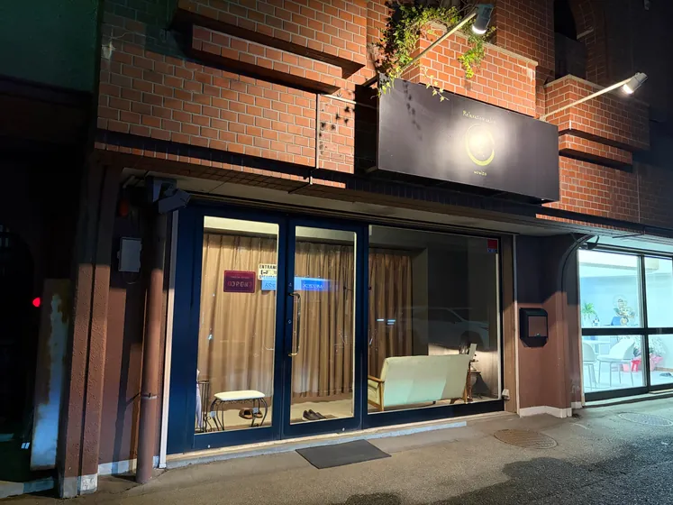
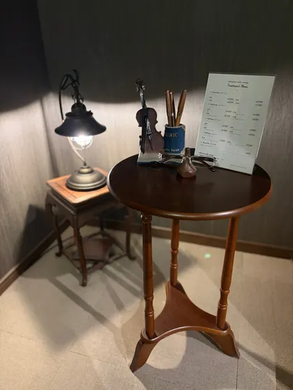
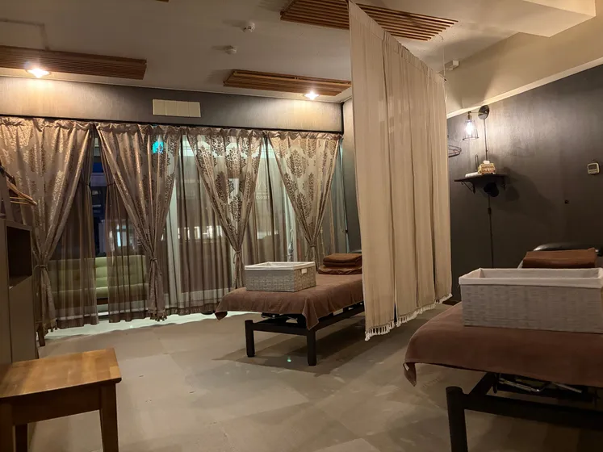
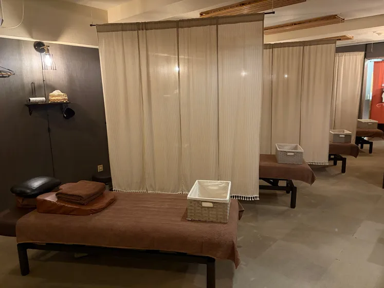
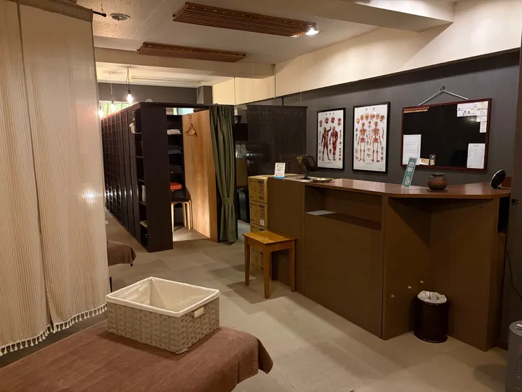
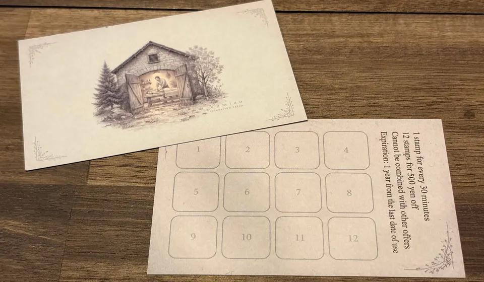

揉蔵（もみぞう）
大田原市のリラクゼーションサロン、揉蔵（もみぞう）です。
もみほぐしを中心に、ドライヘッドスパ、足つぼ・リフレクソロジーのコースをご用意しています。日々の疲れを感じたときに、気軽にお立ち寄りください。
お知らせ
いまお知らせはありません。最新の情報は公式LINEでもお届けしています。





揉蔵について
一人ひとりに合わせて、丁寧に。
お疲れの箇所やお好みに合わせて、力加減を調整しながら、スタッフが丁寧にもみほぐします。
通いやすい料金で。
30分2,000円から。短い時間でも、気になるところをしっかりほぐします。
通うほど、お得に。
クーポンやスタンプカードなどをご用意しています。
- 月・木は24時まで営業
- 当日のご予約も受付
- 無料駐車場あり
はじめての方へ
クーポン
公式LINEで、どなたでも使えるクーポンと、友だち限定のクーポンを、その時々でご用意しています。ご来店の前に、使えるクーポンがないか確かめてみてください。
内容は、リンク先でご確認ください。
スタンプカード

施術30分ごとに、スタンプを1つ押します。60分なら2つ、120分なら4つです。12個たまったカードは、500円の割引券としてお使いいただけます。120分のコースなら、3回でたまります。
12個目のスタンプを押した日のお会計には使えません。ほかの特典とは併用できません。有効期限は、最後のご利用日から1年です。
営業時間
- 月・木
- 14:00 – 24:00
- 金
- 14:00 – 22:00
- 土・日
- 10:00 – 22:00
- 火・水
- 定休日（祝日も曜日どおり）
アクセス
- 住所
- 〒324-0041
栃木県大田原市本町1丁目2701-11
サイトー・バルコニー107 - 目印
- ハローワーク大田原の近く
- 支払い
- 現金のほか、以下に対応クレジットカードVisa、Mastercard、JCB、American Express、Diners Club、Discover電子マネー交通系IC、iD、QUICPayQRコード決済PayPay、d払い、楽天ペイ、au PAY など